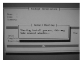

Illustration 1: Transferring Installation Image to Hard Drive

| Keyboard Language | Code |
|---|---|
| English | GEHCMR |
| French | GEHC?R |
| Portuguese | GEHCMR |
| Italian | GEHCMR |
| Spanish | GEHCMR |
| German | GEHCMR |
| Swedish | GEHCMR |
The OS software load takes about 13 minutes. After about 90 seconds, a progress message (shown below) displays, indicating that the install image is being transferred.
Illustration 1: Transferring Installation Image to Hard Drive
As the installation begins, it queries all physical drives in the system and builds/partitions all available devices. If the disk is not what the system expected, a warning may display indicating the disk is bad. Software will fix during the installation. Click [Ignore] to proceed with the installation.
Two minutes later, an additional message (shown below) displays indicating that the installation process has begun.
Illustration 2: Starting Installation Process
